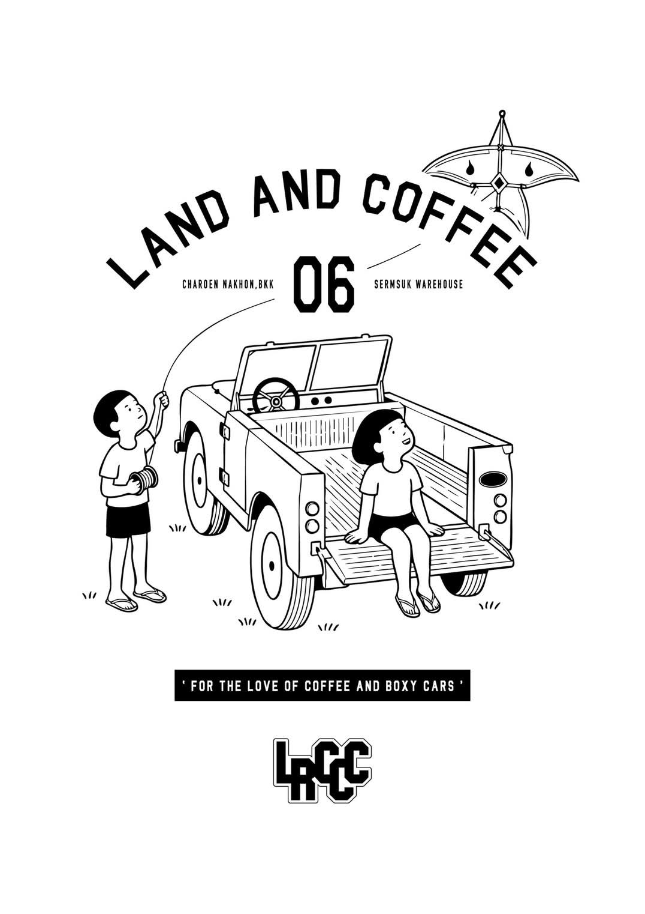
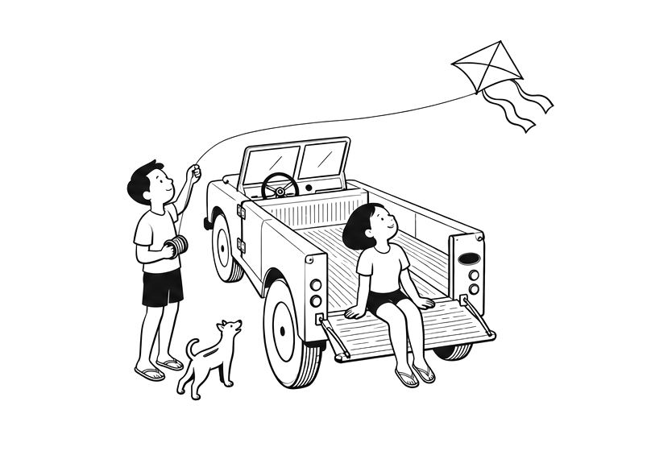
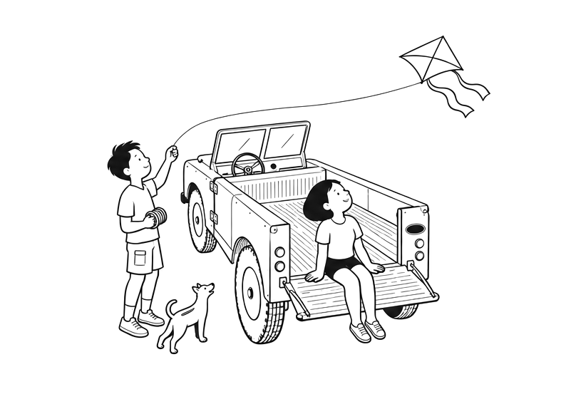
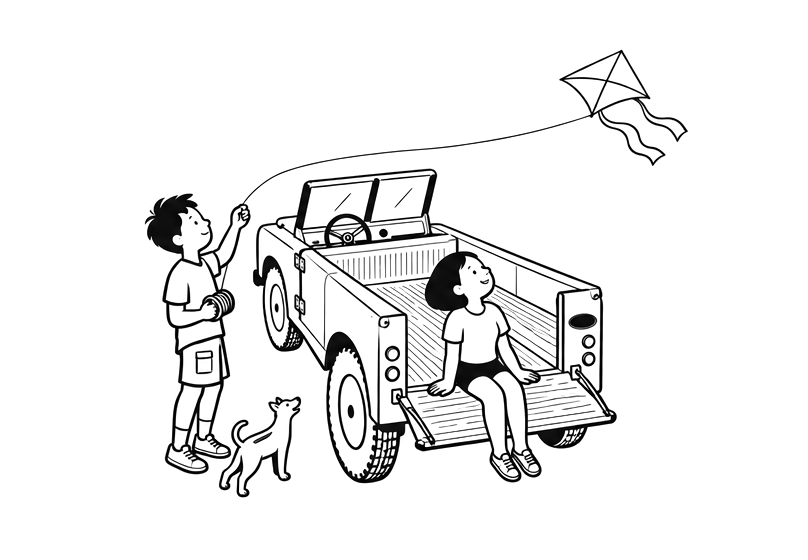
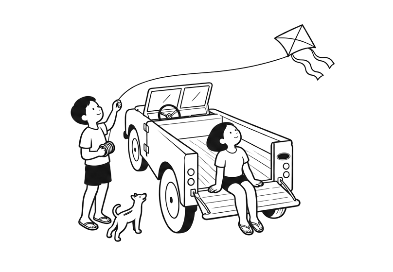
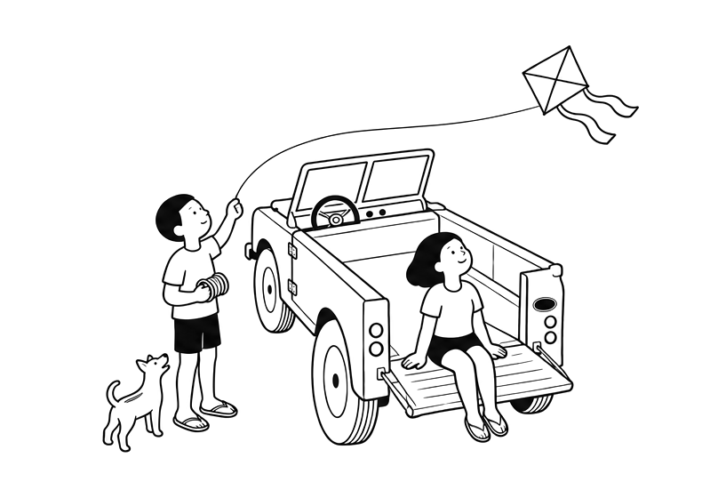
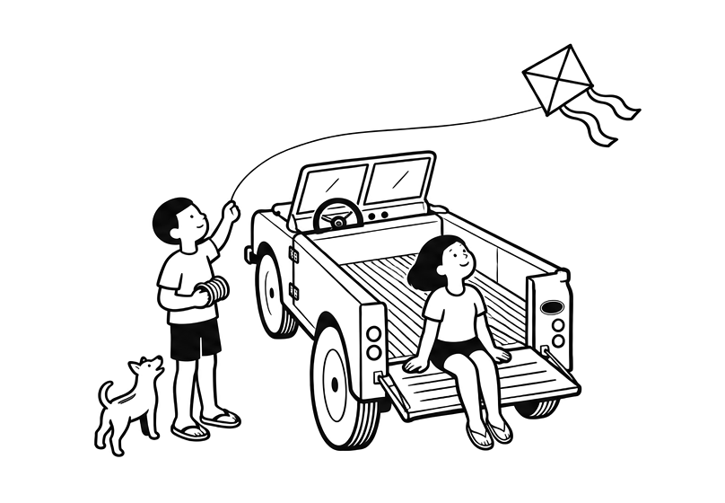
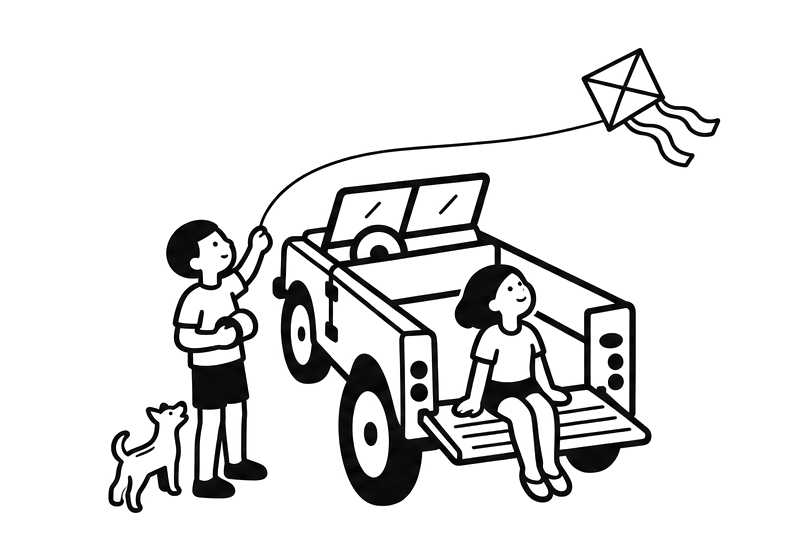
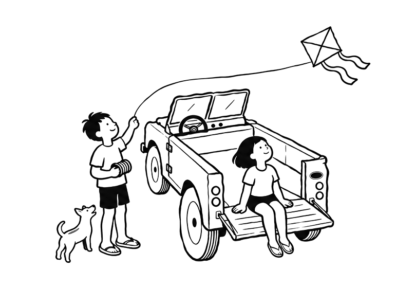

Land and Coffee 06
แผ่นเทียบแนวภาพขาวดำ 8 แบบในมุมเฉียงท้ายรถ พร้อมต้นฉบับอ้างอิง กดที่ภาพเพื่อเปิดขนาดเต็ม


















แผ่นเทียบแนวภาพขาวดำ 8 แบบในมุมเฉียงท้ายรถ พร้อมต้นฉบับอ้างอิง กดที่ภาพเพื่อเปิดขนาดเต็ม








